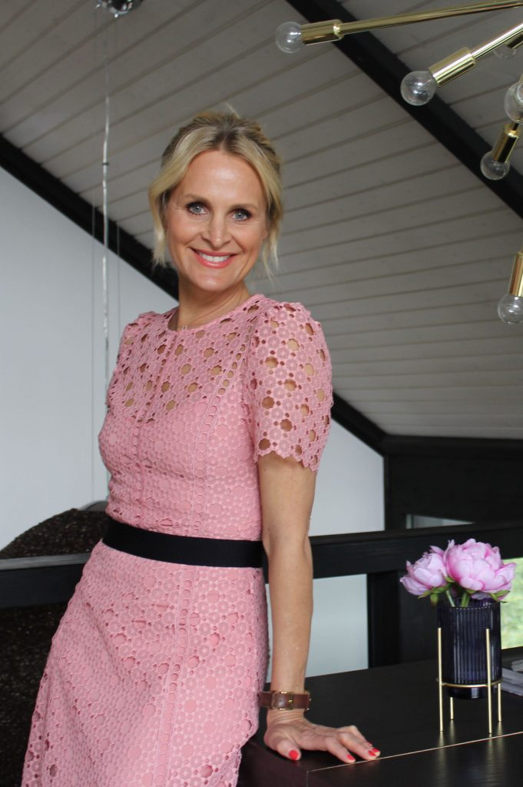
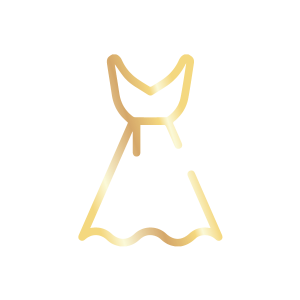

Dein Style ist Ausdruck deiner Persönlichkeit
Komm jetzt zum exklusiven Byouty-Seminar im Smartvillage München.

Es geht nicht darum was du trägst, sondern wie du es trägst.
Weißt du nicht genau was dir steht, bist du dir unsicher, ob du adäquat gekleidet in deinem Job unterwegs bist, fühlst du dich auf Abendveranstaltungen oft underdressed oder unsichtbar? Vielleicht fällt es dir aber auch schwer, deine Persönlichkeit in deinem Styling widerspiegeln zu lassen oder du bist dir noch nicht sicher, wer du überhaupt bist? Dann wird es Zeit, dass wir gemeinsam deine ganz individuelle innere und äußere Schönheit entdecken und dein eigener Look ein kleines Stil-Upgrade erfährt.
Damit du genau den richtigen Ton mit deinen Outfits triffst und dein Kleidungstil weder in die Kategorie „graue Maus“ oder „Fashion Desaster“ abrutscht, verrate ich dir, wie du mit ein paar auf deine Persönlichkeit abgestimmten Tricks, mehr Souveränität, Selbstbewusstsein, Kompetenz oder Kreativität ausdrücken kannst, ohne dich verkleidet zu fühlen.
Wie sagt Iris Apfel, 90-jährige Fashionikone aus New York, immer so schön: „Du musst wissen wer du bist, um deinen Stil zu finden!“ Ich helfe dir dabei!
Look Entwickeln
Als leidenschaftliches Fashion-Victim, Designerin, Stylistin und langjährige Mode-Expertin helfe ich dir dabei, ein eigenes Gespür für deinen Typ und deinen persönlichen Look zu entwickeln.
Stil Festigen
Gemeinsam krempeln wir deine Garderobe um und entwickeln einen unkomplizierten Stil, der zu deiner Persönlichkeit passt. Mit dieser Strategie bist du dir zukünftig sicher, was dir steht und was zu dir passt.

Strahlen
Freue dich auf dein leibgewordenes Spiegelbild. Vertraue auf dein attraktives, souveränes und kompetentes Äußeres und werde noch mehr du selbst.
Komm zum Byouty Seminar
Folgendes wirst du bei dem Seminar lernen:
- Gemeinsam mit Lehrtrainerin und Wingwave-Coach Bettina Heidrowski finden wir heraus, wer du wirklich bist und welchen Teil deiner Persönlichkeit unbedingt auch andere sehen sollten.
- Du erweckst deine eigene innere Schönheit und manifestierst sie im Außen.
- Wir helfen dir dich selbst besser kennen und lieben zu lernen und du bekommst das Handwerkszeug für mehr Selbstbewusstsein, Kompetenz und Präsenz.
- Stil zu haben, bedeutet, seine eigenen Stärken und Schwächen zu kennen - dabei unterstütze ich dich.
- Ich zeige dir, wie du sie gezielt nutzen kannst, um dich und dein Profil von anderen zu unterscheiden.
- Als leidenschaftliches Fashion-Victim, Designerin, Stylistin und langjährige Mode-Expertin helfe ich dir dabei, ein eigenes Gespür für deinen Typ und deinen persönlichen Look zu entwickeln.
- Mit dieser Strategie bist du dir zukünftig sicher, was dir steht und was zu dir passt. Freue dich auf dein liebgewordenes Spiegelbild.
- Vertraue auf dein attraktives, souveränes und kompetentes Äußeres und werde noch mehr du selbst.
- Gemeinsam krempeln wir deine Garderobe um und entwickeln einen unkomplizierten Stil, der zu deiner Persönlichkeit passt.
München
Der erste Eindruck ist oft entscheidend!
Auch wenn es oberflächlich erscheint, urteilen wir oft in Sekundenschnelle über unser Gegenüber. Wir entscheiden augenblicklich über Attraktivität, Vertrauenswürdigkeit, Kompetenz, Sympathie und vieles mehr. Seit Menschengedenken ist die Fähigkeit, andere direkt zu kategorisieren, in unserem Kleinhirn angelegt. Nur so konnten unsere Vorfahren zwischen Freund und Feind unterscheiden. War der schnelle Scan in der Steinzeit noch überlebenswichtig, entscheidet er heute in Sekundenbruchteilen über die Wahrnehmung des Gegenübers. Bei aller Persönlichkeit ist also das äußere Erscheinungsbild und die Ausstrahlung maßgeblich dafür verantwortlich, wie wir von anderen eingeschätzt werden. Die gute Nachricht: Der Mensch ist prinzipiell visuell orientiert und nimmt die Welt vorrangig über das Auge wahr. Das bedeutet, du kannst mit dem richtigen Look ganz easy einen bestimmten Teil deiner Persönlichkeit und deiner Position kommunizieren.
Vereinbare deinen Beratungstermin!Kundenstimmen